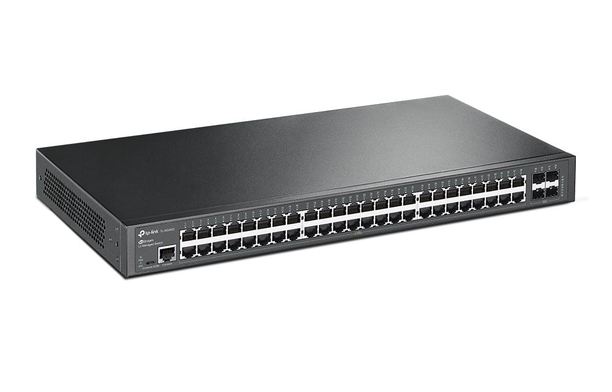

ramas (frames): La capa de enlace de datos organiza los datos en unidades llamadas tramas, que incluyen la
información de control necesaria, como las direcciones MAC de origen y destino.
Control de acceso al medio (MAC)
Gestiona el acceso al medio físico compartido para evitar colisiones. Se asegura de que los nodos sepan
cuándo pueden transmitir para evitar que múltiples dispositivos transmitan simultáneamente.
Detección y corrección de errores
La capa de enlace de datos detecta errores en las tramas mediante sumas de verificación, como CRC
(Cyclic Redundancy Check), y puede solicitar retransmisiones si los datos llegan corruptos.
Control de flujo
Regula la velocidad de envío de datos para evitar que un nodo rápido sobrecargue a un nodo más lento.
Esto ayuda a evitar la pérdida de tramas o la saturación del receptor.
Direccionamiento físico
Utiliza las direcciones MAC para identificar de manera única los dispositivos en una red local,
asegurándose de que los datos lleguen al nodo correcto.
Segmentación de tramas
Si los datos son demasiado grandes para transmitirse de una vez, la capa de enlace de datos los fragmenta
en tramas más pequeñas que luego se ensamblan en el destino.
Sincronización de tramas
Garantiza que tanto el transmisor como el receptor estén sincronizados para interpretar correctamente el inicio y
el fin de una trama.
Control de topología
Mantiene información sobre la disposición física de los nodos en la red para que los datos puedan transmitirse de
manera eficiente.
Dispositivos
Nombre
Funciones
Imagen
Switch
Un switch (o conmutador) es uno de los dispositivos más comunes en la capa de enlace de datos.
Se encarga de recibir tramas de datos en sus puertos y, basándose en las direcciones MAC de origen y
destino, las reenvía solo al puerto correspondiente, en lugar de enviar los datos a todos los puertos.

Bridge
Un bridge es un dispositivo que conecta dos o más segmentos de red y filtra el tráfico entre ellos,
tomando decisiones basadas en las direcciones MAC. Un bridge es útil para reducir colisiones y
dividir grandes redes en segmentos más pequeños.
NIC
La tarjeta de red (NIC) conecta físicamente un dispositivo (como una computadora) a la red y
permite la comunicación a través de esta. La NIC también contiene la dirección MAC única de cada
dispositivo.
Access Point
Un punto de acceso inalámbrico trabaja en la capa de enlace de datos cuando maneja el tráfico de la
red local entre dispositivos y su dirección MAC. Permite la conexión de dispositivos inalámbricos
a una red cableada.